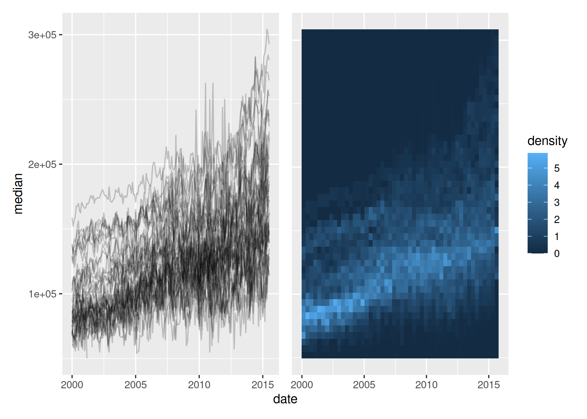

The goal of gglinedensity is to bring the DenseLines algorithm to R via ggplot2, providing a “derived density visualisation (that) allows users both to see the aggregate trends of multiple (time) series and to identify anomalous extrema” (Moritz and Fisher, 2018).
Installation
You can install gglinedensity like so:
install.packages("gglinedensity")You can install the development version of gglinedensity like so:
# install.packages("pak")
pak::pak("hrryt/gglinedensity")Example
This is a basic example which shows you how to create a DenseLines heatmap:
library(ggplot2)
library(gglinedensity)
library(patchwork)
p <- ggplot(txhousing, aes(date, median, group = city))
lines <- p + geom_line(alpha = 0.2, na.rm = TRUE)
heatmap <- p + stat_line_density(bins = 50, drop = FALSE, na.rm = TRUE)
lines + heatmap + plot_layout(axes = "collect")
You can also calculate the number of paths crossing a given bin, without using the DenseLines algorithm:
ggplot(dplyr::storms, aes(long, lat, group = name)) +
borders(colour = NA, fill = "grey50") +
stat_path_density(geom = "tile", binwidth = 1.25, na.rm = TRUE) +
borders() +
xlim(-180, 0) +
ylim(-40, 80) +
coord_sf(
crs = sf::st_crs(5070),
default_crs = sf::st_crs(4326),
xlim = c(-120, -30), ylim = c(0, 70)
) +
theme(panel.background = element_rect(fill = "grey10"))